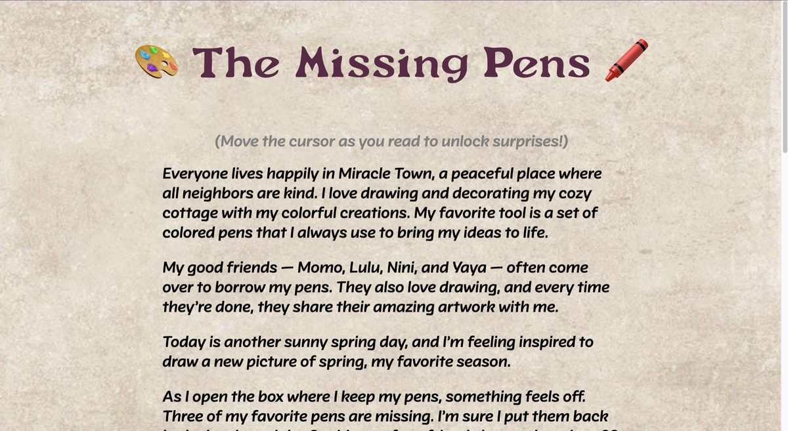
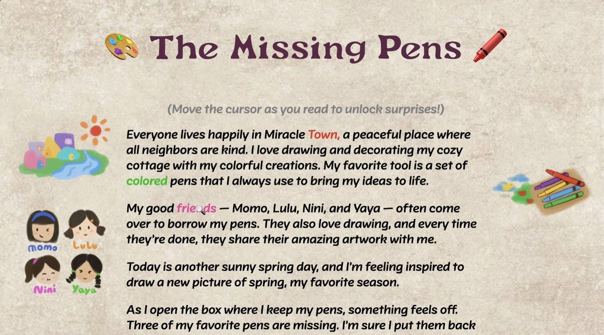
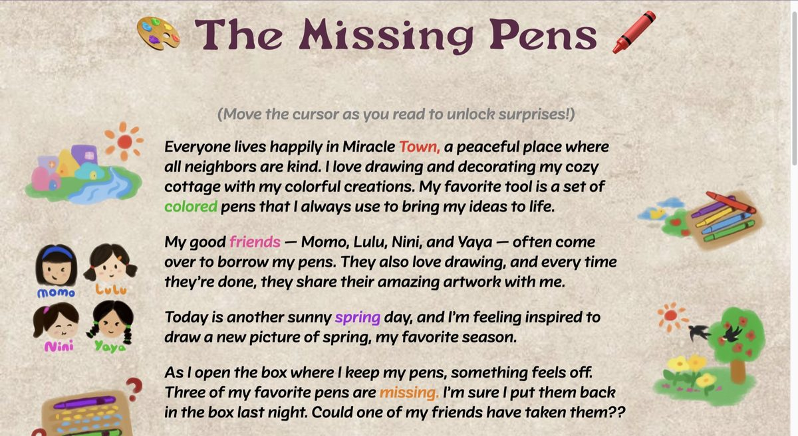
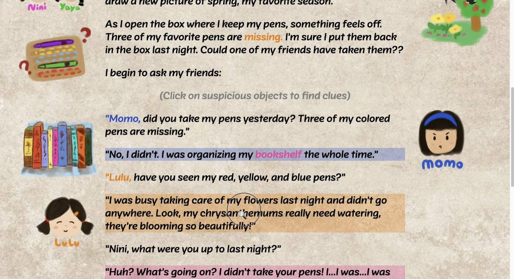
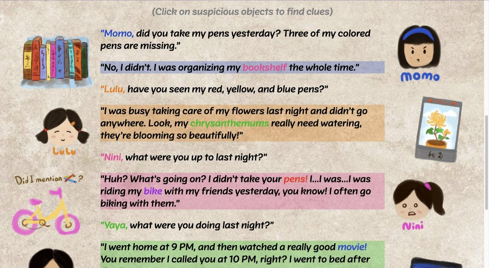
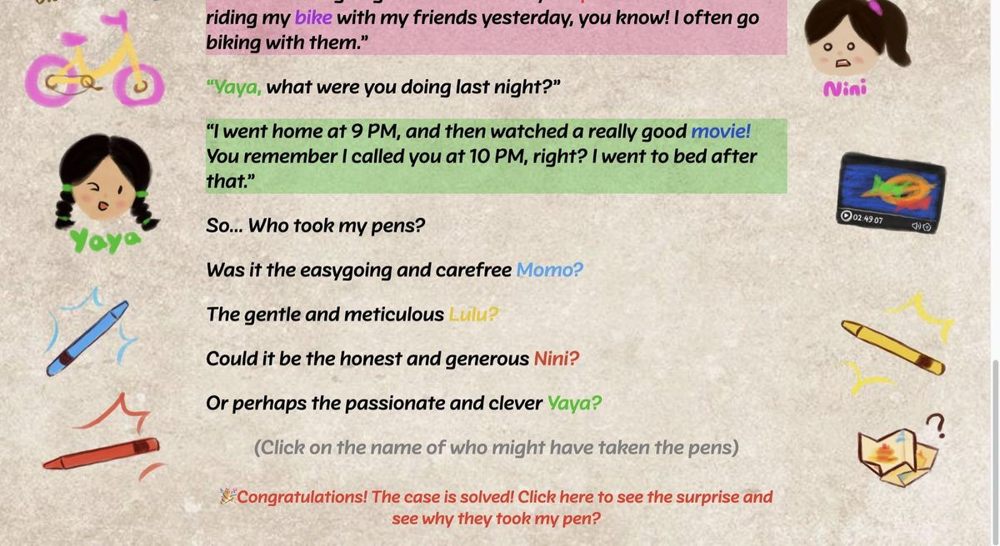
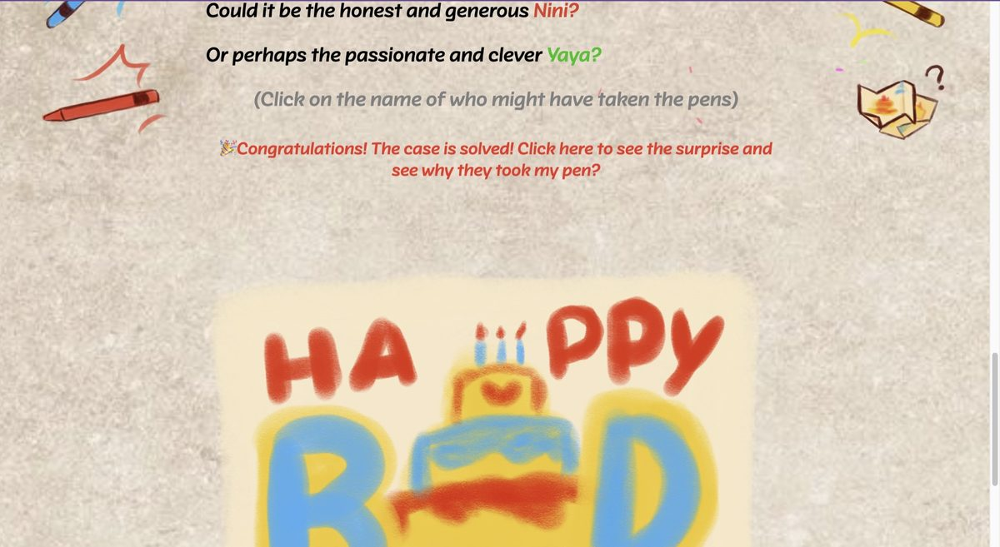

The Missing Pens
A creative coding project combining an interactive storytelling website and a Teachable Machine experience to promote an event.
- Year
- 2025
- Class and project
- Interactive Design: Digital Narrative & Multiple Announcement, Boston University
- Tools and medium
- Glitch, Sketchbook, Teachable Machine, Creative Coding, Digital Illustration
About this project
The Missing Pens is a digital story and a gesture-controlled announcement, made for Interactive Design. In the story, the narrator’s colored pens go missing in Miracle Town. The reader asks the friends Momo, Lulu, Nini and Yaya what they know, works out who took the pens, and reaches a birthday ending. Moving the cursor reveals surprises along the way. The announcement uses Teachable Machine: the viewer shows a pen to the camera or makes a hand sign to move through it. Both pieces only work when someone acts.













